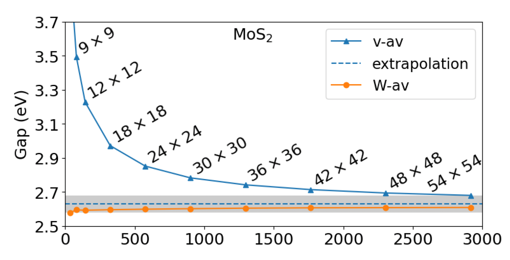

Yambo tutorial: Quasiparticles in the GW approximation
This material is adapted from work by Fulvio Paleari .
Useful info for the tutorial:
Check the table of contents below for the planned sections of the tutorial.
There is an additional page here containing the various scripts and files (inputs, submissions, postprocessing)
Yambo input gw.in
# ____ ____ _ ____ ____ ______ ___
# |_ _||_ _| / \ |_ \ / _||_ _ \ ." `.
# \ \ / / / _ \ | \/ | | |_) | / .-. \
# \ \/ / / ___ \ | |\ /| | | __". | | | |
# _| |_ _/ / \ \_ _| |_\/_| |_ _| |__) |\ `-" /
# |______||____| |____||_____||_____||_______/ `.___."
#
#
#
# Version 5.1.0 Revision 21422 Hash (prev commit) fde6e2a07
# Branch is
# MPI+OpenMP+SLK+HDF5_MPI_IO Build
# http://www.yambo-code.org
#
rim_cut # [R] Coulomb potential
gw0 # [R] GW approximation
ppa # [R][Xp] Plasmon Pole Approximation for the Screened Interaction
dyson # [R] Dyson Equation solver
HF_and_locXC # [R] Hartree-Fock
em1d # [R][X] Dynamically Screened Interaction
FFTGvecs = 20 Ry # [FFT] Plane-waves
X_Threads=0 # [OPENMP/X] Number of threads for response functions
DIP_Threads=0 # [OPENMP/X] Number of threads for dipoles
SE_Threads=0 # [OPENMP/GW] Number of threads for self-energy
RandQpts=1000000 # [RIM] Number of random q-points in the BZ
RandGvec= 100 RL # [RIM] Coulomb interaction RS components
CUTGeo= "slab z" # [CUT] Coulomb Cutoff geometry: box/cylinder/sphere/ws/slab X/Y/Z/XY..
% CUTBox
0.000000 | 0.000000 | 0.000000 | # [CUT] [au] Box sides
%
CUTRadius= 0.000000 # [CUT] [au] Sphere/Cylinder radius
CUTCylLen= 0.000000 # [CUT] [au] Cylinder length
CUTwsGvec= 0.700000 # [CUT] WS cutoff: number of G to be modified
EXXRLvcs= 2 Ry # [XX] Exchange RL components
VXCRLvcs= 2 Ry # [XC] XCpotential RL components
Chimod= "HARTREE" # [X] IP/Hartree/ALDA/LRC/PF/BSfxc
% BndsRnXp
1 | 300 | # [Xp] Polarization function bands
%
NGsBlkXp= 1 Ry # [Xp] Response block size
% LongDrXp
1.000000 | 1.000000 | 1.000000 | # [Xp] [cc] Electric Field
%
PPAPntXp= 27.21138 eV # [Xp] PPA imaginary energy
XTermKind= "none" # [X] X terminator ("none","BG" Bruneval-Gonze)
% GbndRnge
1 | 300 | # [GW] G[W] bands range
%
GTermKind= "none" # [GW] GW terminator ("none","BG" Bruneval-Gonze,"BRS" Berger-Reining-Sottile)
DysSolver= "n" # [GW] Dyson Equation solver ("n","s","g")
%QPkrange # [GW] QP generalized Kpoint/Band indices
1|19|23|30|
%
Batch script run_first_job.sh
#!/bin/bash
#SBATCH --nodes=1
#SBATCH --ntasks-per-node=16
#SBATCH --cpus-per-task=1
#SBATCH --partition=cpu
#SBATCH --time=0:30:00
#SBATCH --account=d2021-135-users
#SBATCH --mem-per-cpu=2000MB
#SBATCH --job-name=mos2
#SBATCH --reservation=maxcpu
# load yambo and dependencies
module purge
module use /ceph/hpc/data/d2021-135-users/modules
module load YAMBO/5.1.1-FOSS-2022a
export OMP_NUM_THREADS=${SLURM_CPUS_PER_TASK}
# run job
srun --mpi=pmix -n ${SLURM_NTASKS} yambo -F gw.in -J GW_dbs -C GW_reports
Batch script gpu_job.sh
#!/bin/bash
#SBATCH --nodes=1
#SBATCH --ntasks-per-node=4
#SBATCH --ntasks-per-socket=2
#SBATCH --cpus-per-task=64
#SBATCH --gres=gpu:4
#SBATCH --partition=gpu
#SBATCH --time=0:30:00
#SBATCH --account=d2021-135-users
#SBATCH --mem=230000MB
#SBATCH --job-name=mos2-test
#SBATCH --exclusive
#SBATCH --reservation=maxgpu
# load yambo and dependencies
module purge
module use /ceph/hpc/data/d2021-135-users/modules
module load YAMBO/5.1.1-OMPI-4.0.5-NVHPC-21.2-CUDA-11.2.1
export OMP_NUM_THREADS=8
srun --mpi=pmix -n ${SLURM_NTASKS} yambo -F gw.in -J GW_dbs -C GW_reports
Batch script run01_converge_pol.sh
#!/bin/bash
#SBATCH --nodes=1
#SBATCH --ntasks-per-node=16
#SBATCH --cpus-per-task=1
#SBATCH --partition=cpu
#SBATCH --time=0:30:00
#SBATCH --account=d2021-135-users
#SBATCH --mem-per-cpu=2000MB
#SBATCH --job-name=mos2
# load yambo and dependencies
module purge
module use /ceph/hpc/data/d2021-135-users/modules
module load YAMBO/5.1.1-FOSS-2022a
export OMP_NUM_THREADS=${SLURM_CPUS_PER_TASK}
file0='i01-GW'
for POL_BANDS in 20 40 60 80; do
echo 'NGsBlkXp [Ry] E_vale [eV] E_cond [eV]' > summary_01_${POL_BANDS}bands.txt
for NGsBlkXp_Ry in 6 8 10 12; do
label=Xp_${POL_BANDS}_bands_${NGsBlkXp_Ry}_Ry
jdir=job_${label}
cdir=out_${label}
filein=i01-GW_${label}
sed "s/NGsBlkXp=.*/NGsBlkXp=${NGsBlkXp_Ry} Ry/;
/% BndsRnXp/{n;s/.*/ 1 | ${POL_BANDS} |/}" $file0 > $filein
# run yambo
srun --mpi=pmix -n ${SLURM_NTASKS} yambo -F $filein -J $jdir -C $cdir
E_GW_v=`grep -v '#' ${cdir}/o-${jdir}.qp|head -n 1| awk '{print $3+$4}'`
E_GW_c=`grep -v '#' ${cdir}/o-${jdir}.qp|tail -n 1| awk '{print $3+$4}'`
GAP_GW=`echo $E_GW_c - $E_GW_v |bc`
echo ${NGsBlkXp_Ry} ' ' ${E_GW_v} ' ' ${E_GW_c} ' ' ${GAP_GW} >> summary_01_${POL_BANDS}bands.txt
done
done
Batch script job_parallel.sh
#!/bin/bash
#SBATCH --nodes=1
#SBATCH --ntasks-per-node=16
#SBATCH --cpus-per-task=1
#SBATCH --partition=cpu
#SBATCH --time=1:00:00
#SBATCH --account=d2021-135-users
#SBATCH --mem-per-cpu=2000MB
#SBATCH --job-name=mos2
##ATCH --reservation=maxcpu
# load yambo and dependencies
module purge
module use /ceph/hpc/data/d2021-135-users/modules
module load YAMBO/5.1.1-FOSS-2022a
export OMP_NUM_THREADS=${SLURM_CPUS_PER_TASK}
# info
ncpu=${SLURM_NTASKS}
nthreads=${OMP_NUM_THREADS}
label=MPI${ncpu}_OMP${nthreads}
jdir=run_${label}
cdir=run_${label}.out
# Update input file
filein0=gw.in # Original file
filein=gw_${label}.in # New file
cp -f $filein0 $filein
cat >> $filein << EOF
DIP_CPU= "1 $ncpu 1" # [PARALLEL] CPUs for each role
DIP_ROLEs= "k c v" # [PARALLEL] CPUs roles (k,c,v)
DIP_Threads= 0 # [OPENMP/X] Number of threads for dipoles
X_and_IO_CPU= "1 1 1 $ncpu 1" # [PARALLEL] CPUs for each role
X_and_IO_ROLEs= "q g k c v" # [PARALLEL] CPUs roles (q,g,k,c,v)
X_and_IO_nCPU_LinAlg_INV=1 # [PARALLEL] CPUs for Linear Algebra (if -1 it is automatically set)
X_Threads= 0 # [OPENMP/X] Number of threads for response functions
SE_CPU= "1 $ncpu 1" # [PARALLEL] CPUs for each role
SE_ROLEs= "q qp b" # [PARALLEL] CPUs roles (q,qp,b)
SE_Threads= 0 # [OPENMP/GW] Number of threads for self-energy
EOF
# run yambo
srun --mpi=pmix -n $ncpu yambo -F $filein -J $jdir -C $cdir
Plotting script plot-01.py
import numpy as np
import matplotlib.pyplot as plt
list_of_bands = [20,40,60,80]
list_of_data = []
for bands in list_of_bands:
data = np.loadtxt(f'summary_01_{bands}bands.txt',comments='NGs')
list_of_data.append(data)
for bands,data in zip(list_of_bands,list_of_data):
X=data[:,0]
Y=data[:,2]-data[:,1]
plt.plot(X,Y,marker='.',label=f'{bands}_bands')
plt.ylabel('Direct Gap [eV]')
plt.xlabel('NGsBlkXp [Ry]')
plt.legend()
plt.savefig('fig-01.png')
Plotting script plot-02.py
import numpy as np
import matplotlib.pyplot as plt
list_of_files = ['summary_02_noBG.txt']
#list_of_files = ['summary_02_noBG.txt','summary_03_BG.txt']
list_of_data = []
for _file in list_of_files:
data = np.loadtxt(_file,comments='G b')
list_of_data.append(data)
for _file,data in zip(list_of_files,list_of_data):
X=data[:,0]
Y=data[:,2]-data[:,1]
_label=_file.split('.')[0].split('_')[2]
plt.plot(X,Y,marker='.',label=_label)
plt.ylabel('Direct Gap [eV]')
plt.xlabel('G bands')
plt.legend()
plt.savefig('fig-02.png')
Analysis script parse-ytiming.py
"""
Script used to parse the timings at the end of
Yambo reports file.
Usage: parse_ytimings.py head_calc_dir
head_calc_dir = first characters of the names of directories containing reports
Output:
- scaling plots
"""
from glob import glob
import sys
def parse_timing_data(separator1=" : ",separator2 ="s P",separator3 = "s C",separator4 = "m-"):
"""
Read timing sections of a list of report files
"""
# Get report files
n_runs = len(glob(sys.argv[1]+'*.out'))
reports = glob(sys.argv[1]+'*/r-*')
n_reports = len(reports)
if n_reports != n_runs:
raise ValueError("[ERR] report (%d) and run (%d) numbers are different"%(n_reports,n_runs))
# Produce a dictionary for each output
# Key: timing section name, Value: timing in seconds
time_dicts = []
n_tasks = []
for report in reports:
with open(report) as r:
lines = r.readlines()
# Find Timing Overview in the report
for il,line in enumerate(lines):
if "Threads total" in line: n_tasks.append(int(line.split(":")[1].strip()))
if "Timing Overview" in line: l0 = il
if "Memory Overview" in line: l1 = il
lines=lines[l0:l1]
time_dict = {}
for line in lines:
if separator1 in line:
aux = line.split(separator1)
key = aux[0].strip()
# Use separator2 for parallel runs, separator3 for serial
if separator2 in aux[1]: value = aux[1].split(separator2)[0].strip()
if separator3 in aux[1]: value = aux[1].split(separator3)[0].strip()
# Convert in seconds if minutes format found
if separator4 in value: value = float(value.split(separator4)[0])*60.+\
float(value.split(separator4)[1])
else: value = float(value)
time_dict[key]=value
time_dicts.append(time_dict)
# Last check
n_dicts = len(time_dicts)
if n_dicts!=n_reports:
raise ValueError("[ERR] Parsing problem (number of dicts. %d different from number of reports %d)"%(n_dicts,n_reports))
return n_tasks,time_dicts
def get_global_time(separator1="m-"):
"""
Read global time (MAX) from list of report files
"""
# Get report files
n_runs = len(glob(sys.argv[1]+'*.out'))
reports = glob(sys.argv[1]+'*/r-*')
n_reports = len(reports)
if n_reports != n_runs:
raise ValueError("[ERR] report and run number are different: ",n_reports,n_runs)
time_total = []
for report in reports:
with open(report) as r:
lines = r.readlines()
for line in lines:
if "[Time-Profile]" in line:
time= line.split(':')[1].strip('s\n')
if separator1 in time: time = float(time.split(separator1)[0])*60.+\
float(time.split(separator1)[1])
else: time = float(time)
time_total.append(time)
break
n_times = len(time_total)
if n_times!=n_reports:
raise ValueError("[ERR] Parsing problem (number of times %d different from number of reports %d)"%(n_times,n_reports))
return time_total
def plot_scaling(n_tasks,time_total):
"""
Plot scaling figure: times (s) vs n_tasks
"""
import matplotlib.pyplot as plt
import numpy as np
n_tasks = np.array(n_tasks)
time_total = np.array(time_total)
x = sorted(n_tasks)
y = time_total[np.argsort(n_tasks)]
plt.xticks(x)
plt.xlabel("N tasks")
plt.ylabel("Time (s)")
plt.plot(x,y, '.-', c='teal',markersize=10)
plt.savefig('gw_scaling.png')
#plt.show()
if __name__=="__main__":
if len(sys.argv)!=2:
print("Usage: > python parse_ytimings.py header_dir")
print("with argument being head chars of report directory i.e. 'header_dir'='run_MPI'")
exit()
n_tasks, time_dicts = parse_timing_data()
time_total = get_global_time()
plot_scaling(n_tasks,time_total)
Plotting script plot_bands.py
import numpy as np
import matplotlib.pyplot as plt
import sys
def plot_bands(data1,data2):
"""
Plot bands (DFT vs GW)
"""
def get_high_sym_indices(Npts):
den=3.+np.sqrt(3.)
x,y,z=[np.sqrt(3.)/den,1./den,2./den]
return [0,int(x*Npts)-1,int((x+y)*Npts)-1,int(Npts)-1]
ax = plt.axes()
ax.set_ylabel("Energy (eV)")
Spts = get_high_sym_indices(len(data1))
Svals= [ data1[pt,0] for pt in Spts ]
ax.set_xticks(Svals)
ax.set_xticklabels(['G','M','K','G'])
for v in Svals: ax.axvline(v,c='black')
Nb = data1.shape[1]-1
for ib in range(Nb):
if ib==0:
ax.plot(data1[:,0],data1[:,ib+1], '-', c='red',label='dft')
ax.plot(data2[:,0],data2[:,ib+1], '-', c='blue',label='gw')
else:
ax.plot(data1[:,0],data1[:,ib+1], '-', c='red')
ax.plot(data2[:,0],data2[:,ib+1], '-', c='blue')
plt.legend()
plt.savefig('gw_bands.png')
plt.show()
if __name__=="__main__":
if len(sys.argv)!=4:
print("Usage: > python plot_bands.py DFT_bands_file GW_bands_file N_b")
print("with argument being name of interpolated bands file: DFT, GW")
print("and N_b the bands number")
exit()
Nb = int(sys.argv[3])
cols = [ i for i in range(Nb+1) ]
dft_bands = np.genfromtxt(sys.argv[1],usecols=(cols))
gw_bands = np.genfromtxt(sys.argv[2],usecols=(cols))
plot_bands(dft_bands,gw_bands)
We will work in
/exa5/data/d2021-135-users. If you didn’t do it before, please create there a directory named after your username.The tutorial is located in
/exa5/data/d2021-135-users/YAMBO_TUTORIALPlease copy this directory in your own user’s directory:
cd /exa5/data/d2021-135-users
mkdir MY-USER-DIRECTORY
cp -r /exa5/data/d2021-135-users/YAMBO_TUTORIAL MY-USER-DIRECTORY/
cd MY-USER-DIRECTORY
In this tutorial you will learn how to run a GW simulation using Yambo on a HPC machine.
You will compute the quasiparticle corrections to the band structure of a free-standing single layer of MoS$_2$ while learning about convergence studies, parallel strategies, and GPU calculations.
In the end, you will obtain a quasiparticle band structure based on the simulations, the first step towards the reproduction of an ARPES spectrum. Beware: we won’t use fully converged parameters, so the final result should not be considered very accurate.

MoS$_2$ monolayer (top and side views). Gray: Mo atoms, yellow: S atoms.
Many-body corrections to the DFT band gap
We want to describe the electronic energy levels using a better description of electron-electron interactions than DFT is capable of.
Essentially, we want to solve the non-linear quasiparticle equation at first order in the GW self-energy \(Σ\):
For each electronic state $nk$, the self-energy can be separated into two components: a static, gap-opening term called the exchange self-energy (\(\Sigma^x\)), and an energy-dependent, usually gap-closing term called the correlation self-energy (\(\Sigma^c\)). These contributions are tackled separately by the code:
The energy-dependent dynamical electronic screening \(\varepsilon^{-1}(\omega)\) is included in \(\Sigma^c\).
In this way, we can compute the “quasiparticle” corrections \(E^{QP}_{nk}\) to the single-particle Kohn-Sham eigenvalues \(\epsilon_{nk}\). The typical workflow for a GW calculation is:
{kind=link}
Set up a Yambo calculation
Provided you have cloned the tutorial repository in your directory, enter it now
cd YAMBO_TUTORIAL
Yambo SAVE folder
First of all, we need to convert some of the data produced in a previous non-self-consistent DFT calculation (using Quantum ESPRESSO) into a convenient format for Yambo.
The QE save folder for MoS$_2$ is at 00_QE-DFT. Move inside it and then run the p2y executable to generate the uninitialised SAVE. But first, we need to load the yambo-specific modules:
module use /ceph/hpc/data/d2021-135-users/modules
module load YAMBO/5.1.1-FOSS-2022a
Then:
cd 00_QE-DFT/mos2.save
p2y
Now, we need to run the initialization step. Every Yambo run must start with this step. Just type
yambo
and check the standard output. This step determins the $G$-vector shells and $k$- and $q$-point grids from the DFT calculations. If you check inside the SAVE you will see two types of databases. The static ones, starting with ns.*, are directly converted in the p2y, while the dynamical ones, ndb.* are generated during the initialisation.
ls SAVE/
ndb.gops # info on G-vector shells, etc
ndb.kindx # info and k and q meshes
ns.db1 # info on geometry and KS bands
ns.kb_pp_pwscf # pseudopotential info
ns.wf # wave functions info
...
The databases are written in netCDF format.
Yambo has produced also a human readable output, r_setup, reporting relevant information such as lattice parameters, symmetries, atomic positions, k-points, DFT eigenvalues and band gaps. We can have a quick look at the sections.
vim r_setup
[02.01] Unit cells # Lattice geometry info
==================
...
[02.02] Symmetries # Symmetry ops. written explicitly
==================
...
[02.03] Reciprocal space # Reciprocal lattice info
========================
...
[02.04] K-grid lattice # k-point coords. written explicitly
======================
...
[02.05] Energies & Occupations # Info on band gaps and occupations
============================== # DFT eigenvalues
...
[03] Transferred momenta grid and indexing # q-points (momentum transfer grid)
==========================================
Finally, let us move the SAVE and the report file to the directory where we will run the first GW calculation.
mv SAVE r_setup ../../01_GW_first_run/
cd ../../01_GW_first_run/
Yambo input file
Now that we have a working SAVE, it is time to generate the input file we will be using for our first GW calculation.
This can be done by the yambo executable via command-line instructions.
If you type
yambo -h
You will get a list of the possibile options:
___ __ _____ __ __ _____ _____
| Y || _ || Y || _ \ | _ |
| | ||. | ||. ||. | / |. | |
\ _/ |. _ ||.\ / ||. _ \ |. | |
|: | |: | ||: | ||: | \|: | |
|::| |:.|:.||:.|:.||::. /|::. |
`--" `-- --"`-- --"`-----" `-----"
'A shiny pot of fun and happiness [C.D.Hogan]'
This is : yambo
Version : 5.1.0 Revision 21422 Hash fde6e2a07
Configuration: MPI+OpenMP+SLK+HDF5_MPI_IO
Help & version:
-help (-h) <string> :<string> can be an option (e.g. -h optics)
-version :Code version & libraries
Input file & Directories:
-Input (-F) <string> :Input file
-Verbosity (-V) <string> :Input file variables verbosity (more with -h Verbosity)
-Job (-J) <string> :Job string
-Idir (-I) <string> :Input directory
-Odir (-O) <string> :I/O directory
-Cdir (-C) <string> :Communication directory
Parallel Control:
-parenv (-E) <string> :Environment Parallel Variables file
-nompi :Switch off MPI support
-noopenmp :Switch off OPENMP support
Initializations:
-setup (-i) :Initialization
-coulomb (-r) :Coulomb potential
Response Functions:
-optics (-o) <string> :Linear Response optical properties (more with -h optics)
-X (-d) <string> :Inverse Dielectric Matrix (more with -h X)
-dipoles (-q) :Oscillator strenghts (or dipoles)
-kernel (-k) <string> :Kernel (more with -h kernel)
Self-Energy:
-hf (-x) :Hartree-Fock
-gw0 (-p) <string> :GW approximation (more with -h gw0)
-dyson (-g) <string> :Dyson Equation solver (more with -h dyson)
-lifetimes (-l) :GoWo Quasiparticle lifetimes
Bethe-Salpeter Equation:
-Ksolver (-y) <string> :BSE solver (more with -h Ksolver)
Total Energy:
-acfdt :ACFDT Total Energy
Utilites:
-Quiet (-Q) :Quiet input file creation
-fatlog :Verbose (fatter) log(s)
-DBlist (-D) :Databases properties
-walltime <int> :Walltime (more with -h walltime)
-memory <int> :Memory (more with -h memory)
-slktest :ScaLapacK test
YAMBO developers group (http://www.yambo-code.org)
In order to build our input, we need to use the options for a GW calculation. We want to use the plasmon pole approximation for the dynamical screening, solve the quasiparticle equation with the Newton method, and add a truncation of the Coulomb potential which is useful for 2D systems. In addition, we want to set up explicitly the parameters for parallel runs. Therefore we type:
yambo -gw0 p -g n -r -V par -F gw.in
You can now inspect the input file gw.in and try to familiarize with some of the parameters. The input will come with default values for many parameters that we might need to change.
We discuss them below step by step.
Parameters for a GW calculation
We start with the runlevels:
rim_cut # [R] Coulomb potential
gw0 # [R] GW approximation
ppa # [R][Xp] Plasmon Pole Approximation for the Screened Interaction
dyson # [R] Dyson Equation solver
HF_and_locXC # [R] Hartree-Fock
em1d # [R][X] Dynamically Screened Interaction
Runlevels
The [R] keyword refers to the runlevels: these flag tell Yambo which parts of the code should be executed. Each runlevel enables its own set of input variables. In particular here we have:
rim_cut: Coulomb potential random integration method and cutoff (enables [RIM] and [CUT] variables).gw0: Yambo learns that it has to run a GW calculation (enables [GW] variables).HF_and_locXC: calculation of exchange part of the self-energy $\Sigma^x$ (i.e., Hartree-Fock approximation).em1d: enables the calculation of the dynamical screening of the electrons, i.e. the dielectric matrix ([X] variables). In this way Yambo can go beyond Hartree-Fock and compute $\Sigma^c$.ppa: tells Yambo that the dynamical screening should be computed in the plasmon pole approximation ([Xp] variables).dyson: Yambo will solve the Dyson-like quasiparticle equation.
Going through the file we find:
EXXRLvcs= 37965 RL # [XX] Exchange RL components
VXCRLvcs= 37965 RL # [XC] XCpotential RL components
Recall that we have, for the exchange self-energy:
EXXRLvcs and VXCRLvcs
EXXRLvcscontrols the number of G-vectors used to build the exchange self-energy, whileVXCRLvcsdoes the same for the exchange-correlation potential reconstructed from DFT. Since these two quantities are to be subtracted, it is important to keep the same values here (and possibly not change the default maximum value).
Let us now have a look at the parameters for the calculation correlation part of the self-energy. Recall that we have:
(Here, the \(\rho\)-terms represent the screening matrix elements which are computed separately by yambo and stored in their own database.)
The calculation which is divided in two steps. First, the response function in the plasmon pole approximation (em1d ppa), under the keywords [X] and [Xp], i.e., \(\varepsilon^{-1}_{GG'}(q,\omega)\).
Chimod= "HARTREE" # [X] IP/Hartree/ALDA/LRC/PF/BSfxc
% BndsRnXp
1 | 300 | # [Xp] Polarization function bands
%
NGsBlkXp= 1 RL # [Xp] Response block size
% LongDrXp
1.000000 | 0.000000 | 0.000000 | # [Xp] [cc] Electric Field
%
PPAPntXp= 27.21138 eV # [Xp] PPA imaginary energy
XTermKind= "none" # [X] X terminator ("none","BG" Bruneval-Gonze)
Note
Chimod= "Hartree"indicates that we compute the response function in the RPA approximation.BndsRnXprepresents the electronic states included in the response function $\varepsilon$, and is a convergence parameter.NGsBlkXpis the number of G-vectors used in the response function $\varepsilon^{-1}_{GG’}$. It is a convergence parameter and can be expressed in number of reciprocal lattice vectors (RL) or energy (Ry, suggested).LongDrXprepresents the direction of the long-range auxiliary external electric field used to compute $\varepsilon^{-1}_{GG’}(q)$ at $q,G\rightarrow 0$. In general you have to be mindful of the system symmetries. In our case, we will put1 | 1 | 1to cover all directions.PPAPntXp= 27.21138 eVis the energy of the plasmon pole. We don’t normally change this.XTermKindis used to specify a “terminator”: this accelerates numerical convergence with respect to the number of bandsBndsRnXp.
Next, we have the [GW] group of parameters controlling the next part of the correlation self-energy calculation:
% GbndRnge
1 | 300 | # [GW] G[W] bands range
%
GTermKind= "none" # [GW] GW terminator ("none","BG" Bruneval-Gonze,"BRS" Berger-Reining-Sottile)
DysSolver= "n" # [GW] Dyson Equation solver ("n","s","g")
%QPkrange # [GW] QP generalized Kpoint/Band indices
1|7|1|300|
%
Note
GbndRngeis the number of G-vectors used to build the correlation self-energy. It is a convergence parameter and can be accelerated withGTermKind.DysSolver="n"specifies the method used to solve the linearised quasiparticle equation. In most cases, we use the Newton method"n".QPkrangeindicates the range electronic (nk) states for which the GW correction $\Sigma_{nk}$ is computed. The first two numbers represents the range of k-point indices, the second two the range of band indices.
We now take a look at the parameters relative to the Coulomb interaction at small momenta and for 2D systems, which we should edit now once and for all.
RandQpts=1000000 # [RIM] Number of random q-points in the BZ
RandGvec= 100 RL # [RIM] Coulomb interaction RS components
CUTGeo= "slab z" # [CUT] Coulomb Cutoff geometry: box/cylinder/sphere/ws/slab X/Y/Z/XY..
Note
The [RIM] keyword refers to a Monte Carlo random integration method performed to avoid numerical instabilities close to $q=0$ and $G=0$ in the $q$-integration of the bare Coulomb interaction - i.e. $4\pi/(q+G)^2$ - for 2D systems.
The [CUT] keyword refers to the truncation of the Coulomb interaction to avoid spurious interaction between periodically repeated copies of the simulation supercell along the $z$-direction (we are working with a plane-wave code). Keep in mind that the vacuum space between two copies of the system should be converged: here we are using 20 bohr but a value of 40 bohr would be more realistic.
Finally, we have the parallel parameters. We are going to discuss them at the end of the parallel section, we can skip them for now.
X_and_IO_CPU= "" # [PARALLEL] CPUs for each role
X_and_IO_ROLEs= "" # [PARALLEL] CPUs roles (q,g,k,c,v)
X_and_IO_nCPU_LinAlg_INV=-1 # [PARALLEL] CPUs for Linear Algebra (if -1 it is automatically set)
X_Threads=0 # [OPENMP/X] Number of threads for response functions
DIP_CPU= "" # [PARALLEL] CPUs for each role
DIP_ROLEs= "" # [PARALLEL] CPUs roles (k,c,v)
DIP_Threads=0 # [OPENMP/X] Number of threads for dipoles
SE_CPU= "" # [PARALLEL] CPUs for each role
SE_ROLEs= "" # [PARALLEL] CPUs roles (q,qp,b)
SE_Threads=0 # [OPENMP/GW] Number of threads for self-energy
In a GW calculation, the most important parameters to be numerically converged are:
kpoint mesh (requires multiple nscf DFT runs)
BndsRnXpNGsBlkXpGbndRnge[2D system]: vacuum separation with Coulomb cutoff (requires multiple scf+nscf DFT runs)
From the above discussion you can easily guess that many-body perturbation theory calculations are much more numerically expensive than DFT calculations.
The first run
We will start by running a single GW calculation. Here we will focus on the magnitude of the quasiparticle gap. This means that we only need to calculate two quasi-particle corrections, i.e., valence and conduction bands at the k-point where the minimum gap occurs. This information can be found by inspecting the report file r_setup produced when the SAVE folder was initialised. Just search for the string ‘Direct Gap’ and you’ll see that the latter occurs at k-point 7 between bands 13 and 14:
[X] Filled Bands : 13
[X] Empty Bands : 14 300
[X] Direct Gap : 1.858370 [eV]
[X] Direct Gap localized at k : 7
In addition, we’ll set the number of bands in BndsRnXp and GbndRnge to a small value, just to have it run fast. Hence, we modify the input file accordingly (check BndsRnXp, GbndRnge, LongDrXp, QPkrange):
rim_cut # [R] Coulomb potential
gw0 # [R] GW approximation
ppa # [R][Xp] Plasmon Pole Approximation for the Screened Interaction
dyson # [R] Dyson Equation solver
HF_and_locXC # [R] Hartree-Fock
em1d # [R][X] Dynamically Screened Interaction
X_Threads=0 # [OPENMP/X] Number of threads for response functions
DIP_Threads=0 # [OPENMP/X] Number of threads for dipoles
SE_Threads=0 # [OPENMP/GW] Number of threads for self-energy
RandQpts=1000000 # [RIM] Number of random q-points in the BZ
RandGvec= 100 RL # [RIM] Coulomb interaction RS components
CUTGeo= "slab z" # [CUT] Coulomb Cutoff geometry: box/cylinder/sphere/ws/slab X/Y/Z/XY..
% CUTBox
0.000000 | 0.000000 | 0.000000 | # [CUT] [au] Box sides
%
CUTRadius= 0.000000 # [CUT] [au] Sphere/Cylinder radius
CUTCylLen= 0.000000 # [CUT] [au] Cylinder length
CUTwsGvec= 0.700000 # [CUT] WS cutoff: number of G to be modified
EXXRLvcs= 37965 RL # [XX] Exchange RL components
VXCRLvcs= 37965 RL # [XC] XCpotential RL components
Chimod= "HARTREE" # [X] IP/Hartree/ALDA/LRC/PF/BSfxc
% BndsRnXp
1 | 20 | # [Xp] Polarization function bands
%
NGsBlkXp= 1 RL # [Xp] Response block size
% LongDrXp
1.000000 | 1.000000 | 1.000000 | # [Xp] [cc] Electric Field
%
PPAPntXp= 27.21138 eV # [Xp] PPA imaginary energy
XTermKind= "none" # [X] X terminator ("none","BG" Bruneval-Gonze)
% GbndRnge
1 | 20 | # [GW] G[W] bands range
%
GTermKind= "none" # [GW] GW terminator ("none","BG" Bruneval-Gonze,"BRS" Berger-Reining-Sottile)
DysSolver= "n" # [GW] Dyson Equation solver ("n","s","g")
%QPkrange # [GW] QP generalized Kpoint/Band indices
7|7|13|14|
%
We are now ready to run this calculation. Since you should never run a Yambo calculation on the login node, we will need a submission script to add our job to the queue. A minimal submission script is provided:
vim run_first_job.sh
#!/bin/bash
#SBATCH --nodes=1
#SBATCH --ntasks-per-node=16
#SBATCH --cpus-per-task=1
#SBATCH --partition=cpu
#SBATCH --time=0:30:00
#SBATCH --account=d2021-135-users
#SBATCH --mem-per-cpu=2000MB
#SBATCH --job-name=mos2
#SBATCH --reservation=maxcpu
# load yambo and dependencies
module purge
module use /ceph/hpc/data/d2021-135-users/modules
module load YAMBO/5.1.1-FOSS-2022a
export OMP_NUM_THREADS=${SLURM_CPUS_PER_TASK}
# run yambo
srun --mpi=pmix -n ${SLURM_NTASKS} yambo -F gw.in -J job_00_first_run -C out_00_first_run
We will ignore all details regarding parallelization, as it will be covered in the next section. Since there are no lowercase flags after yambo, it is not going to generate an input file, but rather, run the one specified by -F. Now, go ahead an submit this job
sbatch run_first_job.sh
The status of the jobs can be monitored via:
squeue -u $USER # to inspect the status of jobs
# (hint: make a unix alias, if you like)
scancel <jobid> # to delete jobs in the queue
The newly generated databases will be stored in the job directory, as specified by -J, while the report, log and output files will be stored in the communications directory (-C). As this is your first yambo run, take a moment to inspect the report and log files, which you can find inside the -C directory. In these report and log files, you can see the steps performed by yambo. For instance, the code calculates the screening at every k-point and stores it in the PPA database. By opening the report
vim out_00_first_run/r-job_00_first_run_HF_and_locXC_gw0_dyson_rim_cut_em1d_ppa
you will see
[07] Dynamic Dielectric Matrix (PPA)
====================================
[WR./job_00_first_run//ndb.pp]-------------------------------
Then, the actual GW section will use this screening to construct the correlation part of the self-energy:
[09.01] G0W0 (W PPA)
====================
[ GW ] Bands range : 1 20
[GW/PPA] G damping : 0.100000 [eV]
QP @ state[ 1 ] K range: 7 7
QP @ state[ 1 ] b range: 13 14
[RD./job_00_first_run//ndb.pp]-------------------------------
Now, inspect the output file
vim out_00_first_run/o-job_00_first_run.qp
# Vxc =Slater exchange(X)+Perdew & Zunger(C)
# Vnlxc=Hartree-Fock
#
# K-point Band Eo [eV] E-Eo [eV] Sc|Eo [eV]
#
7 13 0.000000 -0.025594 0.544159
7 14 1.858370 3.495889 -0.417727
#
# 11/11/2022 at 08:31 yambo @ cn0343 [start]
In this file, Eo is our starting point (DFT) while E-Eo shows the GW correction one should apply to obtain the quasi-particle energies. In order to calculate the gap (automatically from the command line), we’ll use some simple commands. First, we get everything that is not a # symbol grep -v '#' and we pass that to another command with a “pipe” |. Then, tail -n 1/head -n 1 will retain the first/last line, and awk '{print $3+$4}' will get us the sum of the third and fourth columns. Altogether, this would be as follows
grep -v '#' out_00_first_run/o-job_00_first_run.qp|head -n 1| awk '{print $3+$4}'
-0.025594
grep -v '#' out_00_first_run/o-job_00_first_run.qp|tail -n 1| awk '{print $3+$4}'
5.35426
These two command give us the quasiparticle energies we’ve calculated - their difference is the GW-corrected optical gap.
GW convergence
In this part of the tutorial, we will study convergence with respect to some of the parameters mentioned above. In order to complete this tutorial within a single hands-on session, we will restrict ourselves to a very coarse $k$-point grid.
Hence, we’ll perform our convergence studies on top of a DFT calculation done with a 6 $\times$ 6 $\times$ 1 k-point grid and without spin-orbit coupling: the SAVE we generated earlier.
While this will speed up calculations and require few CPU cores, you should be aware that such coarse sampling of the BZ is severely underconverged and should only be used for educational purposes.
Let’s move into the appropriate directory
cd ../02_GW_convergence
Response function \(\varepsilon^{-1}_{GG'}\) - Bands and G-vectors
We are now ready to start our convergence tests. We’ll begin with the variables controlling the polarization function, i.e., NGsBlkXp for the number of G-vectors and BndsRnXp for the number of bands. For this, we will keep GbndRnge constant at a reasonably high value - you can inspect the input i01-GW
vim i01-GW
and check that you have:
% GbndRnge
1 | 80 | # [GW] G[W] bands range
%
Since we need to run yambo for several values of NGsBlkXp and BndsRnXp, it makes sense to use two nested loops. That is exactly what we did in the submission script run01_converge_pol.sh. Since this will take a few minutes, save time by submitting it straight away and we’ll have a look at it while it runs:
sbatch run01_converge_pol.sh
Monitoring
You can monitor that the job is running by the squeue command
sbatch squeue -u $USER
and also by checking the files created in your folder
ls -ltr
-rw-rw-r-- 1 enccs035 enccs035 2995 15 nov 13.57 i01-GW_Xp_20_bands_6_Ry
drwxrwxr-x 2 enccs035 enccs035 4096 15 nov 13.57 job_Xp_20_bands_6_Ry
drwxrwxr-x 3 enccs035 enccs035 4096 15 nov 13.57 out_Xp_20_bands_6_Ry
-rw-rw-r-- 1 enccs035 enccs035 2995 15 nov 13.57 i01-GW_Xp_20_bands_8_Ry
drwxrwxr-x 3 enccs035 enccs035 4096 15 nov 13.57 out_Xp_20_bands_8_Ry
drwxrwxr-x 2 enccs035 enccs035 4096 15 nov 13.57 job_Xp_20_bands_8_Ry
-rw-rw-r-- 1 enccs035 enccs035 2996 15 nov 13.58 i01-GW_Xp_20_bands_10_Ry
drwxrwxr-x 3 enccs035 enccs035 4096 15 nov 13.58 out_Xp_20_bands_10_Ry
drwxrwxr-x 2 enccs035 enccs035 4096 15 nov 13.58 job_Xp_20_bands_10_Ry
-rw-rw-r-- 1 enccs035 enccs035 2996 15 nov 13.58 i01-GW_Xp_20_bands_12_Ry
drwxrwxr-x 3 enccs035 enccs035 4096 15 nov 13.58 out_Xp_20_bands_12_Ry
drwxrwxr-x 2 enccs035 enccs035 4096 15 nov 13.58 job_Xp_20_bands_12_Ry
-rw-rw-r-- 1 enccs035 enccs035 195 15 nov 13.58 summary_01_20bands.txt
-rw-rw-r-- 1 enccs035 enccs035 2995 15 nov 13.58 i01-GW_Xp_40_bands_6_Ry
...
Finally you can monitor how runs are proceeding by looking into the log files
tail -f out_Xp_*_bands_*/LOG/*_1
==> out_Xp_20_bands_6_Ry/LOG/l-job_Xp_20_bands_6_Ry_HF_and_locXC_gw0_dyson_rim_cut_em1d_ppa_CPU_1 <==
<15s> P1: [TIMING] io_WF : 1.1353s CPU (34 calls, 0.033 sec avg)
<15s> P1: [TIMING] WF_load_FFT : 1.1538s CPU ( 7 calls, 0.165 sec avg)
<15s> P1: [TIMING] io_KB_pwscf : 1.1918s CPU ( 6 calls, 0.199 sec avg)
<15s> P1: [TIMING] DIPOLE_transverse : 2.4771s CPU
<15s> P1: [TIMING] io_fragment : 2.6220s CPU (46 calls, 0.057 sec avg)
<15s> P1: [TIMING] io_X : 3.1953s CPU (19 calls, 0.168 sec avg)
<15s> P1: [TIMING] Dipoles : 4.4012s CPU
<15s> P1: [11] Memory Overview
<15s> P1: [12] Game Over & Game summary
<15s> P1: [TIMING] [Time-Profile]: 15s
==> out_Xp_20_bands_8_Ry/LOG/l-job_Xp_20_bands_8_Ry_HF_and_locXC_gw0_dyson_rim_cut_em1d_ppa_CPU_1 <==
<11s> P1: X@q[6] | | [000%] --(E) --(X)
<11s> P1: X@q[6] |########################################| [100%] --(E) --(X)
<11s> P1: [PARALLEL distribution for RL vectors(X) on 2 CPU] Loaded/Total (Percentual):31878/64009(50%)
<11s> P1: [PARALLEL distribution for RL vectors(X) on 2 CPU] Loaded/Total (Percentual):18975/64009(30%)
<11s> P1: [X-CG] R(p) Tot o/o(of R): 153 504 100
<11s> P1: Xo@q[7] | | [000%] --(E) --(X)
<11s> P1: Xo@q[7] |########################################| [100%] --(E) --(X)
<11s> P1: [PARALLEL distribution for X Frequencies on 1 CPU] Loaded/Total (Percentual):2/2(100%)
<11s> P1: X@q[7] | | [000%] --(E) --(X)
<11s> P1: X@q[7] |########################################| [100%] --(E) --(X)
<11s> P1: [PARALLEL distribution for RL vectors(X) on 2 CPU] Loaded/Total (Percentual):31878/64009(50%)
<11s> P1: [08] Local Exchange-Correlation + Non-Local Fock
Let’s now have look into the job we just submitted.
vim run01_converge_pol.sh
First, we defined the double loop and we intialize a summary file for each iteration of the outer loop by printing a header to it. The input file i01-GW is used as a template for every calculation in the loops, so we assign it to a variable.
file0='i01-GW'
for POL_BANDS in 20 40 60 80; do
echo 'NGsBlkXp [Ry] E_vale [eV] E_cond [eV]' > summary_01_${POL_BANDS}bands.txt
for NGsBlkXp_Ry in 6 8 10 12; do
(...)
done
done
Inside the loops, we generate some useful labels which will come in handy to distinguish between runs. Then, we pass the variables from the loops to the sed command, in order to generate new files in an automated way - sed replaces any matching string with whatever is provided by the loop variable. Next, we run yambo using the labels to specify different job -J and communications -C directories every time. Finally, we get the quasiparticle energies with grep commands as shown before and append a new line to the summary file. So, inside each loop, we have
label=Xp_${POL_BANDS}_bands_${NGsBlkXp_Ry}_Ry
jdir=job_${label}
cdir=out_${label}
filein=i01-GW_${label}
sed "s/NGsBlkXp=.*/NGsBlkXp=${NGsBlkXp_Ry} Ry/;
/% BndsRnXp/{n;s/.*/ 1 | ${POL_BANDS} |/}" $file0 > $filein
# run yambo
srun --mpi=pmix -n ${SLURM_NTASKS} yambo -F $filein -J $jdir -C $cdir
E_GW_v=`grep -v '#' ${cdir}/o-${jdir}.qp|head -n 1| awk '{print $3+$4}'`
E_GW_c=`grep -v '#' ${cdir}/o-${jdir}.qp|tail -n 1| awk '{print $3+$4}'`
echo ${NGsBlkXp_Ry} ' ' ${E_GW_v} ' ' ${E_GW_c} >> summary_01_${POL_BANDS}bands.txt
Finally, let us plot this data. First, check that the job has finished with
squeue -u $USER
[$USER@vglogin0005 02_GW_convergence]$ squeue -u enccs035
JOBID PARTITION NAME USER ST TIME NODES NODELIST(REASON)
[$USER@vglogin0005 02_GW_convergence]$
and verify that the energies were extracted correctly by inspecting the summary files. Remember to load the python module if you haven’t done so yet, and then plot:
module purge
module load matplotlib/3.2.1-foss-2020a-Python-3.8.2
python plot-01.py
The plot will produce a fig-01.png file.
You can copy and open it in your local machine with something like
[WARNING: run this on another terminal in your local machine, fixing $USER]
scp $USER@login.vega.izum.si:/exa5/data/d2021-135-users/$USER/YAMBO_TUTORIAL/02_GW_convergence/fig-01.png ./
For the purpose of the tutorial, we will choose 80 bands and 10 Ry as our converged parameters and move on. This would imply an acceptable error of 7 meV. To retain the chosen variables, we’ll make a copy of the corresponding input file:
cp i01-GW_Xp_80_bands_10_Ry i02-GW
Self-energy \(\Sigma^c\) - Bands
We will now proceed to converge the number of bands for the correlation part of the self-energy, i.e., GbndRnge. This step is actually simpler, since it only involves one loop. This is coded in the provided script run02_converge_Gbnds.noBG.sh. You can look into it
vim run02_converge_Gbnds.noBG.sh
and go ahead and submit it.
sbatch run02_converge_Gbnds.noBG.sh
[OPTIONAL]: Use the terminator to accelerate convergence
While that runs, we’ll have a look at the so-called Bruneval-Gonze (BG) terminator, which is a method to accelerate convergence with respect to empty bands. The variable that controls this for the bands in the correlation self-energy is GTermKind. This is currently set to “none” in i02-GW, so create a new input file i02-GW_BG and set this variable to “BG”. We can do this in the command line by simply typing
sed 's/GTermKind=.*/GTermKind= "BG"/' i02-GW > i02-GW_BG
Note that XTermKind also offers the same terminator for the sum over bands of the polarization function (we just chose not to use it in the previous section of this excercise, and we’ll keep it as “none”). Now, copy the last submission script and edit it to run the same convergence test using the BG terminator.
cp run02_converge_Gbnds.noBG.sh run03_converge_Gbnds.BG.sh
Try and do this yourself first, and then continue reading to check your understanding.
You’ll have to change the input file template, i.e., use i02-GW_BG where the terminator has been activated. Modify also the name of the newly generated input files in order to avoid overwriting. Change the name of the summary file for the same reason and, finally, modify the communications and job directories of yambo. Make sure you’ve done all the changes as outlined below.
file0='i02-GW_BG'
summaryfile=summary_03_BG.txt
(...)
label=Gbands_${G_BANDS}_BG
filein=i02-GW_${G_BANDS}_Gbands_BG
Now submit your newly edited script
sbatch run03_converge_Gbnds.BG.sh
While this runs, check if the previous job has finished, i.e., you should have a complete summary_02_noBG.txt file by now.
For a visual result, proceed to plot them with
python plot-02.py
You should get
You can copy and open it in your local machine with something like
[WARNING: run this on another terminal in your local machine, fixing $USER]
scp $USER@login.vega.izum.si:/exa5/data/d2021-135-users/$USER/YAMBO_TUTORIAL/02_GW_convergence/fig-02.png ./
OPTIONAL
If you also did the optional step, you can compare summary_02_noBG.txt with summary_03_BG.txt once run03_converge_Gbnds.BG.sh has finished - you’ll see the effect of the terminator immediately.
Just open the plot-02.py script and uncomment the line #list_of_files = ['summary_02_noBG.txt','summary_03_BG.txt'], then rerun it with python plot-02.py.
You can see that the terminator does a great job at accelerating convergence, and it allows us to use 60 bands incurring an error of only 3 meV (while the latter would have been larger than 0.1 eV had we not used the terminator).
We’ll end the convergence part of the tutorial with an important point about k-points convergence. The latter is the most cumbersome and computationally intensive among the various convergence test, and it involves re-running the DFT step. For this reason (and for this reason only) it was ignored in this tutorial. However, it absolutely cannot be overlooked since it is crucial for the accuracy of the calculated GW corrections. You can read about $k$-points convergence in GW and, importantly, a very efficient workaround for 2D systems in a recent publication (here). MoS$_2$ was one of the materials studied there, and it shows that our result, obtained with a 6x6x1 k-grid, is simply off the chart (blue line).
 Guandalini, D’Amico, Ferretti & Varsano. ArXiv:2205.11946v2
[OPTIONAL]: Use the RIM-W accelerator
However you can try to get a reasonable correction via the RIM-W approach.
cp i02-GW_80_Gbands i04-GW_80_Gbands_rimw
vim i04-GW_80_Gbands_rimw
Then, you just need to add the following two variables to the input file
RIM_W
RandGvecW= 15 RL
and prepare a submission script
cp run02_converge_Gbnds.noBG.sh run04_converge_rimw.sh
vim run04_converge_rimw.sh
and edit it, by removing the loop and changin the input file and jobname
#!/bin/bash
#SBATCH --nodes=1
#SBATCH --ntasks-per-node=16
#SBATCH --cpus-per-task=1
#SBATCH --partition=cpu
#SBATCH --time=0:30:00
#SBATCH --account=d2021-135-users
#SBATCH --mem-per-cpu=2000MB
#SBATCH --job-name=mos2
#SBATCH --reservation=maxcpu
# load yambo and dependencies
module purge
module use /ceph/hpc/data/d2021-135-users/modules
module load YAMBO/5.1.1-FOSS-2022a
export OMP_NUM_THREADS=${SLURM_CPUS_PER_TASK}
summaryfile=summary_04_rimw.txt
echo 'E_vale [eV] E_cond [eV] GAP [eV]' > $summaryfile
G_BANDS=80
label=Gbands_${G_BANDS}_rimw
jdir=job_${label}
cdir=out_${label}
filein=i04-GW_${G_BANDS}_Gbands_rimw
# run yambo
srun --mpi=pmix -n ${SLURM_NTASKS} yambo -F $filein -J $jdir -C $cdir
E_GW_v=`grep -v '#' ${cdir}/o-${jdir}.qp|head -n 1| awk '{print $3+$4}'`
E_GW_c=`grep -v '#' ${cdir}/o-${jdir}.qp|tail -n 1| awk '{print $3+$4}'`
GAP_GW=`echo $E_GW_c - $E_GW_v |bc`
echo ${E_GW_v} ' ' ${E_GW_c} ' ' ${GAP_GW} >> $summaryfile
and then run
sbatch run04_converge_rimw.sh
How much do you get for the band gap ?
GW parallel strategies
MPI parallelization
For this section, let us enter the 03_GW_parallel directory. If you were in the 02_GW_convegence folder just do
cd ../03_GW_parallel
and inspect the input gw.in. You will see that we set low values for most of the convergence parameters except bands:
vim gw.in
FFTGvecs= 20 Ry # [FFT] Plane-waves
EXXRLvcs= 2 Ry # [XX] Exchange RL components
VXCRLvcs= 2 Ry # [XC] XCpotential RL components
% BndsRnXp
1 | 300 | # [Xp] Polarization function bands
%
NGsBlkXp= 1 Ry # [Xp] Response block size
% GbndRnge
1 | 300 | # [GW] G[W] bands range
%
%QPkrange # [GW] QP generalized Kpoint/Band indices
1| 19| 23| 30|
%
Note that we also added FFTGvecs to reduce the size of the Fourier transforms (the default corresponds to Quantum ESPRESSO ecutwfc, i.e. 60 Ry in this case).
In addition, we have deleted all the parallel parameters since we will be setting them via the submission script.
Actually we are now dealing with a heavier system than before: as you can see from the QPkrange values, we have switched to a 12x12x1 $k$-point grid - having 19 points in the irreducible Brillouin zone - and turned spin-orbit coupling on in the DFT calculation - now the top valence band is number 26 instead of 13 because the bands are spin-polarized.
The inspected file should look like this one.
For this part of the tutorial, we will be using the slurm submission script job_parallel.sh, which is available in the calculation directory.
If you inspect it, you will see that the script adds additional variables to the yambo input file.
These variables control the parallel execution of the code:
DIP_CPU= "1 $ncpu 1" # [PARALLEL] CPUs for each role
DIP_ROLEs= "k c v" # [PARALLEL] CPUs roles (k,c,v)
DIP_Threads= 0 # [OPENMP/X] Number of threads for dipoles
X_CPU= "1 1 1 $ncpu 1" # [PARALLEL] CPUs for each role
X_ROLEs= "q g k c v" # [PARALLEL] CPUs roles (q,g,k,c,v)
X_nCPU_LinAlg_INV= 1 # [PARALLEL] CPUs for Linear Algebra
X_Threads= 0 # [OPENMP/X] Number of threads for response functions
SE_CPU= " 1 $ncpu 1" # [PARALLEL] CPUs for each role
SE_ROLEs= "q qp b" # [PARALLEL] CPUs roles (q,qp,b)
SE_Threads= 0 # [OPENMP/GW] Number of threads for self-energy
The keyword DIP refers to the calculations of the screening matrix elements (also called “dipoles”) needed for the screening function, X is the screening function (it stands for $\chi$ since it is a response function), SE the self-energy.
These three sections of the code can be parallelised independently.
Note
In this subsection we are mainly concerned with the [PARALLEL] variables which refer to MPI tasks.
We will see later an example of [OPENMP] parallelisation (i.e., adding threads).
We start by calculating the QP corrections using 16 MPI tasks and a single openMP thread. Therefore, edit the submission script as:
#!/bin/bash
#SBATCH --nodes=1
#SBATCH --ntasks-per-node=16
#SBATCH --cpus-per-task=1
and submit the job
sbatch job_parallel.sh
This will create a new input file and run it. The calculation databases and the human-readable files will be put in separate directories. Check the location of the report r-* file and the log l-* files, and inspect them while the calculation runs.
For simplicity you could just type
tail -f run_MPI16_OMP1.out/LOG/l-*_CPU_1
to monitor the progress in the master thread (Ctrl+C to exit).
As you can see, the run takes some time, even though we are using minimal parameters.
Meanwhile, we can run other jobs increasing the parallelisation. Let’s employ 128 CPUs (i.e., half a CPU node on Vega). We’ll use 128 MPI tasks, still with a single openMP thread. To this end modify the job_parallel.sh script changing
#!/bin/bash
#SBATCH --nodes=1
#SBATCH --ntasks-per-node=128
#SBATCH --cpus-per-task=1
This time the code should be much faster. Once the run is over, try to run the simulation also on 32 and 64 MPI tasks. Each time, changentasks-per-node to this number. Finally, you can try to produce a scaling plot.
The timings are contained in the r-* report files. You can already have a look at them typing
grep Time-Profile run_MPI*/r-*
The python script parse_ytiming.py is useful for the post-processing of report files. You can already find it in the directory, together with the reports for the longer calculations with 1, 2, 4 and 8 MPI tasks which have been provided.
If you didn’t do so already, load the python module
module purge
module load matplotlib/3.2.1-foss-2020a-Python-3.8.2
Then, after your jobs have finished, run the script as
python parse_ytiming.py run_MPI
to look for a report file in each run_MPI*.out folder. Make sure you have only one report file per folder.
You can also play with the script to make it print detailed timing information, however you should already see that it produced a png plot showing times-to-completion on y axis against number of MPI tasks on the x axis.
What can we learn from this plot? In particular, try to answer the following questions:
Up to which number of MPI tasks our system efficiently scales? At which point adding more threads starts to become a waste of resources?
How could we change our parallelisation strategy to improve the scaling even more?
Note
Keep in mind that the MPI scaling we are seeing here is not the true yambo scaling, but depends on the small size of our tutorial system. In a realistic calculation for a large-sized system, yambo has been shown to scale well up to tens of thousands of MPI tasks!
Hybrid parallelization strategy
It turns out that for this system it’s not a good idea to use more than 32 MPI tasks. But we still have 128 CPUs available for this run. How to optimize the calaculation even more? We can try using OpenMP threads.
This is turned on by modifying cpus-per-task in the submission file. The product of the number of OpenMP threads and MPI tasks is equal to the total number of CPUs.
Therefore, we can distribute 128 cpus with 32 MPI tasks (efficient MPI scaling, see above) and then use 4 OpenMP threads:
#!/bin/bash
#SBATCH --nodes=1
#SBATCH --ntasks-per-node=32
#SBATCH --cpus-per-task=4
Actually, we don’t need to change the related openMP variables for the yambo input, since the value 0 means “use the value of OMP_NUM_THREADS” and we have now set this environment variable to 4 via our script.
Otherwise, any positive number can directly specify the number of threads to be used in each section of the code.
DIP_Threads= 0 # [OPENMP/X] Number of threads for dipoles
...
X_Threads= 0 # [OPENMP/X] Number of threads for response functions
...
SE_Threads= 0 # [OPENMP/GW] Number of threads for self-energy
You can try to run this calculation and check if it is faster than the pure 128 MPI one from before.
You should find a massive gain: in our case, the pure MPI128_OMP1 took 01m-02s, while the hybrid MPI32_OMP4 took just 37s, a 40% speedup.
You can also try any other thread combinations including the pure openMP scaling, and compare the timings.
Note
In real-life calculations running on $n_{cores} > 100$, as we have seen, it may be a good idea to adopt a hybrid approach.
The most efficient scaling can depend both on your system and on the HPC facility you’re running on. For a full CPU node on Vega (256 cores), using a large-scale system, we have found that 16 tasks times 16 threads gives the best performance.
OpenMP can help lower memory requirements within a node. You can try to increase the OpenMP share of threads if getting Out Of Memory errors.
As mentioned above, we can conclude that the “best” parallelisation strategy is in general both system-dependent and cluster-dependent. If working on massive systems, it may be well worth your while to do preliminary parallel tests in order to work out the most efficient way to run these jobs.
[OPTIONAL]: Comparing different parallelisation schemes
Up to now we always parallelised over a single parameter, i.e. c or qp. However, Yambo allows for tuning the parallelisation scheme over several parameters broadly corresponding to “loops” (i.e., summations or discrete integrations) in the code.
To this end you can open again the run_parallel.sh script and modify the section where the yambo input variables are set.
For example, X_CPU sets how the MPI Tasks are distributed in the calculation of the response function. The possibilities are shown in the X_ROLEs. The same holds for SE_CPU and SE_ROLEs which control how MPI Tasks are distributed in the calculation of the self-energy.
X_CPU= "1 1 1 $ncpu 1" # [PARALLEL] CPUs for each role
X_ROLEs= "q g k c v" # [PARALLEL] CPUs roles (q,g,k,c,v)
X_nCPU_LinAlg_INV= $ncpu # [PARALLEL] CPUs for Linear Algebra
X_Threads= 0 # [OPENMP/X] Number of threads for response functions
DIP_Threads= 0 # [OPENMP/X] Number of threads for dipoles
SE_CPU= "1 $ncpu 1" # [PARALLEL] CPUs for each role
SE_ROLEs= "q qp b" # [PARALLEL] CPUs roles (q,qp,b)
SE_Threads= 0 # [OPENMP/GW] Number of threads for self-energy
You can try different parallelization schemes and check the performances of Yambo. In doing so, you should also change the jobname label=MPI${ncpu}_OMP${nthreads} in the run_parallel.sh script to avoid confusion with previous calculations.
You may then check how speed, memory and load balance between the CPUs are affected. You could modify the script parse_ytiming.py to parse the new data, read and distinguish between more file names, new parallelisation options, etc.
Note
The product of the numbers entering each variable (i.e.
X_CPUandSE_CPU) times the number of threads should always match the total number of cores (unless you want to overload the cores taking advantage of multi-threads).Using the
X_ThreadsandSE_Threadsvariables you can think about setting different hybrid schemes between the screening and the self-energy runlevels.Memory scales better if you parallelize on bands (
c v b).Parallelization on $k$-points performs similarly to parallelization on bands, but requires more memory.
Parallelization on $q$-points requires much less communication between the MPI tasks. It may be useful if you run on more than one node and the inter-node connection is slow.
Full GW band structure
Running on GPUs
This is the final section of the tutorial, in which we want to compute the full correction to the band structure of single-layer MoS2. In order to get somewhat realistic results, we will use the larger values for the convergence parameters we have identified in the convergence section. In addition, we also increased the vacuum separation (to 30 au) and the k-point mesh (to 18x18x1) in the DFT calculation, and of course we consider spin-orbit coupling.
cd ../04_GW_bands
Now we have a heavier calculation, and we have to do it not just for the band gap, but the entire band structure which includes 37 kpoints in the irreducible Brillouin zone, two spin-orbit-split valence bands, and two spin-orbit-split conduction bands. Let us check the new input:
vim gw.in
%QPkrange # [GW] QP generalized Kpoint/Band indices
1|37|25|28|
%
This is a massive calculation, so run it right now and we’ll discuss it in the meantime:
sbatch gpu_job.sh
As you might have guessed from the name of the submission script, we are here using yet another capability of yambo: running on GPUs instead of CPUs. This usually leads to extreme speedups in the calculations. Fortunately, the Vega cluster also has some GPU nodes!
As you can see from the submission script,
vim gpu_job.sh
#!/bin/bash
#SBATCH --nodes=2
#SBATCH --ntasks-per-node=4
#SBATCH --ntasks-per-socket=2
#SBATCH --cpus-per-task=64
#SBATCH --gres=gpu:4
each GPU node contains four GPUs (gres=gpu:4). In yambo, each GPU corresponds to a single MPI task, therefore we have ntasks-per-node=4. OpenMP threading is allowed - but not too much, otherwise we lose efficiency - and in fact, even though we are filling all CPUs of the node (ntasks-per-socket=64), we are using just export OMP_NUM_THREADS=8.
In addition, you will see that in order to run on GPUs we are now using a different executable than before, obtained with a GPU-specific compilation of the code, which is loaded with a different module: module load YAMBO/5.1.1-OMPI-4.0.5-NVHPC-21.2-CUDA-11.2.1.
We are also, for the first time, using more than one node (nodes=2). In conclusion, we are running over 8 GPU cards, distributed with 8 MPI tasks, and using 8 threads.
The results
After about 6 minutes the calculation should be over and the results collected in folder GW_bnds. The quasiparticle corrections are stored in human-readable form in the file o-GW_bnds.QP, and in netCDF format in the quasiparticle database ndb.QP.
In order to visualize the results in the form of a GW band structure, we will first interpolate the calculated points - recall that we have just 37 points, few of which lie on high-symmetry lines - with ypp, the yambo pre- and post-processing executable.
Note
We also have a python-based interface for advanced treatment of all the Yambo databases, called Yambopy. You can check it out on the yambo wiki.
Let us load the yambo module if needed
module purge
module use /ceph/hpc/data/d2021-135-users/modules
module load YAMBO/5.1.1-FOSS-2022a
We can review the options with ypp -h and generate an input file for band structure interpolation with
ypp -s b -F ypp_bands.in
Let us modify the resulting input file by selecting the ‘boltztrap’ approach to interpolation, the last two valence and first two conduction bands, and a path in the Brillouin zone along the the points $\Gamma$-M-K-$\Gamma$. We also set 100 points for each high-symmetry line.
electrons # [R] Electronic properties
bnds # [R] Bands
PROJECT_mode= "none" # Instruct ypp how to project the DOS. ATOM, LINE, PLANE.
INTERP_mode= "BOLTZ" # Interpolation mode (NN=nearest point, BOLTZ=boltztrap aproach)
INTERP_Shell_Fac= 20.00000 # The bigger it is a higher number of shells is used
INTERP_NofNN= 1 # Number of Nearest sites in the NN method
OutputAlat= 5.90008 # [a.u.] Lattice constant used for "alat" ouput format
cooIn= "rlu" # Points coordinates (in) cc/rlu/iku/alat
cooOut= "rlu" # Points coordinates (out) cc/rlu/iku/alat
% BANDS_bands
25 | 28 | # Number of bands
%
CIRCUIT_E_DB_path= "none" # SAVE obtained from the QE `bands` run (alternative to %BANDS_kpts)
BANDS_path= "" # High-Symmetry points labels (G,M,K,L...) also using composed positions (0.5xY+0.5xL).
BANDS_steps= 100 # Number of divisions
#BANDS_built_in # Print the bands of the generating points of the circuit using the nearest internal point
%BANDS_kpts # K points of the bands circuit
0.00000 |0.00000 |0.00000 |
0.00000 |0.50000 |0.00000 |
0.33333 |0.33333 |0.00000 |
0.00000 |0.00000 |0.00000 |
%
Now, let’s run ypp:
ypp -F ypp_bands.in
This run will produce the file o.bands_interpolated. You can inspect it and see that it contains a plottable band structure, but beware: these are the DFT eigevalues! We didn’t tell ypp where to look for the quasiparticle corrections, so it went into the SAVE folder and interpolated the DFT data.
Let’s rename the output:
mv o.bands_interpolated o.DFT_bands
mkdir DFT_bands
mv o.spin* o.magn* DFT_bands/
In order to interpolate the quasiparticle database, we append its location to the ypp input:
vim ypp_bands.in
add this line at the end
...
GfnQPdb= "E < ./GW_bnds/ndb.QP"
and run ypp again.
ypp -F ypp_bands.in
When it’s done, let’s rename the new output as
mv o.bands_interpolated o.GW_bands
mkdir GW_bands
mv o.spin* o.magn* GW_bands/
Now we are ready to visualize the band structures. In order to do so, you can use the script plot_bands.py that should be already available in the directory.
We load the python module
module purge
module load matplotlib/3.2.1-foss-2020a-Python-3.8.2
and run the script as
python plt_bands.py o.DFT_bands o.GW_bands 4
It should produce a GW_bands.png file containing the following visualization.
You can copy and open it in your local machine with something like
#[WARNING: run this on another terminal in your local machine, fixing $USER]
scp $USER@login.vega.izum.si:/exa5/data/d2021-135-users/$USER/YAMBO_TUTORIAL/04_GW_bands/gw_bands.png ./
You may compare this plot with a converged result from this paper (also done with Yambo):
Dashed lines: DFT, thick lines: GW.
As you can see, the general result is not too bad, but there are some differences both at the DFT and GW levels. The magnitude of the band gap is too large, and the relative energy of the two conduction band minima is not correct. One obvious issue is the lack of convergence of our tutorial calculations. As we know, we should include more vacuum space and many, many more $k$-points. Additionally, this is a transition metal dichalcogenide: for this class of systems, the details of the band structure can strongly depend on small variations in the lattice parameters and on the type of pseudopotential used. A great deal of care must be taken when performing these calculations!
See also
In order to learn more about Yambo, we suggest visiting the Yambo wiki. If you have issues and questions about installing and running the code, you can write them on the Yambo forum.